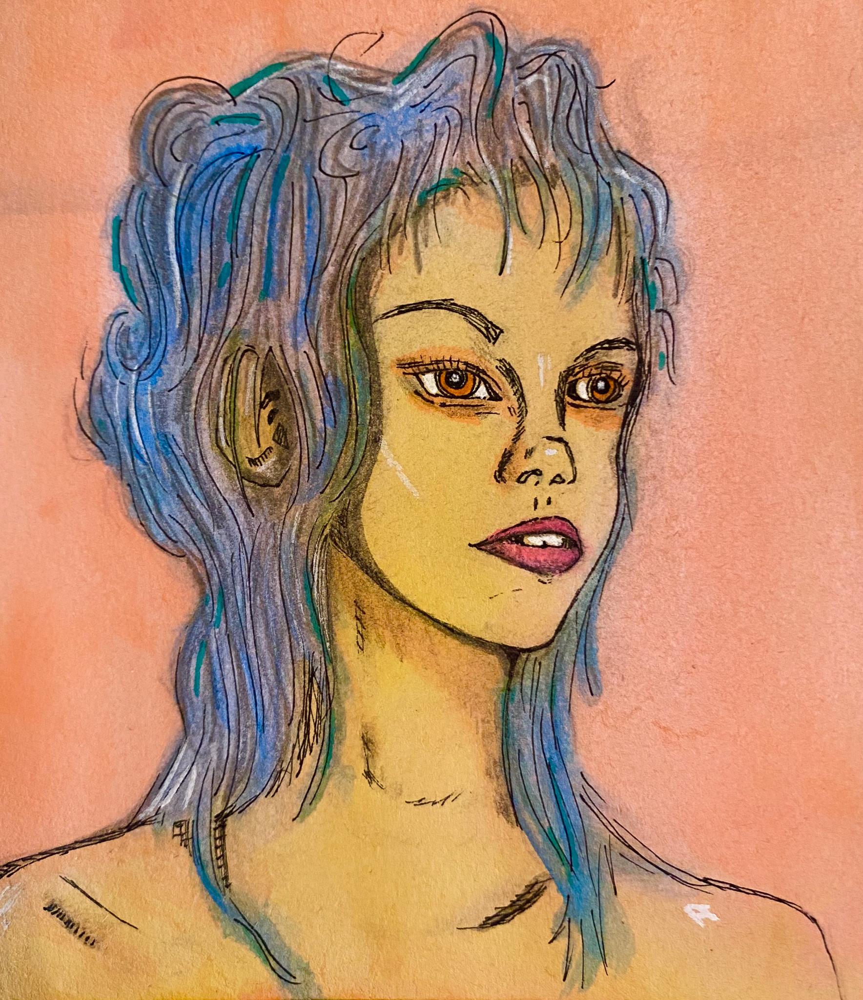
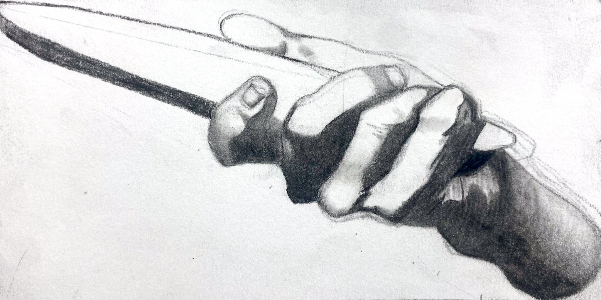

Portfolio
"Koko" (Charcoal, 2024)
"The Colorado Cougar Won't Bite...Probably" (Graphite & Charcoal, 2024)
"Binocular Boy" (Graphite, Charcoal, Colored Pencils, Watercolors, 2024)
"Back Pack" (Graphite, Charcoal, Colored Pencils, Watercolors, 2024)
"Vibrant Skull" (Graphite, Ink, Alcohol Markers, Colored Pencils, 2024)
"I Want a Burger" (Graphite, Ink, Alcohol Markers, Colored Pencils, 2024)
"21st Century Girlie" (Graphite, Ink, Alcohol Markers, Colored Pencils, Watercolors, 2024)
"Sojourner" (Graphite, Ink, Alcohol Markers, Colored Pencils, 2024)
"Dijonai Carrington Shooting Form" (Graphite, Ink, Alcohol Markers, Colored Pencils, 2024)
"Not Doc Martens" (Graphite, Ink, Alcohol Markers, Colored Pencils, 2024)
"Go-go Pink" (Graphite, Ink, Alcohol Markers, Colored Pencils, Watercolors, 2024)
"Binge-watching" (Graphite, Ink, Alcohol Markers, Colored Pencils, 2024)
"Discover" (Graphite, Ink, Alcohol Markers, Colored Pencils, Watercolors, 2024)
"Wisps of Regret" (Graphite, Ink, Colored Pencils, 2024)
"Never Enough" (Graphite, Ink, Alcohol Markers, 2023)
"Dizzy Gillespie" (Graphite & Ink, 2023)
"Bargue Plate 1.23, Enhanced" (Charcoal, 2023)
"Bargue Plate 1.13" (Charcoal, 2023)
"Bargue Plate 1.14" (Charcoal, 2023)
"Bargue Plate 1.7" (Charcoal, 2022)